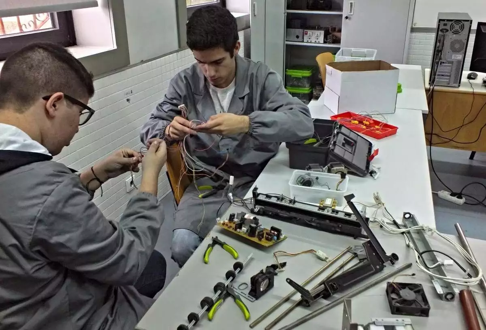

Técnico em Automação Industrial – Técnico integrado ao Ensino Médio
📕Descrição
Nesta modalidade de ensino, baseada na Lei nº 13.415/17, o aluno cursará o Ensino Médio estruturado em conjunto com a formação de Técnico em Automação, numa jornada de até 30 aulas semanais (até 6 aulas diárias), em cada uma das 3 séries. Ao final do curso, o aluno terá concluÃdo o Ensino Médio e obterá, também, o diploma de Técnico em Desenvolvimento de Sistemas, com validade nacional, de acordo com o perfil profissional a seguir: O TÉCNICO EM AUTOMAÇÃO INDUSTRIAL é o profissional que projeta, instala, programa, integra e realiza a manutenção em sistemas aplicados à automação e controle; analisa especificações de componentes e equipamentos que compõem sistemas automatizados; coordena equipes de trabalho e avalia a qualidade de dispositivos e sistemas automatizados. Programa, opera e mantém os sistemas automatizados respeitando normas técnicas de segurança.
📕Eixo-Tecnológico
CONTROLE E PROCESSOS INDUSTRIAIS
💼Onde trabalhar
Indústrias petroquÃmicas, automobilÃsticas, alimentÃcias e de energia; laboratórios de controle de qualidade, de manutenção e pesquisa; empresas de prestação de serviços e como profissional autônomo.
📆Duração do Curso
6 semestres (3 anos).
🕗Horário de aula
Seg - Sex / 07:00-16:00.
Oficina
